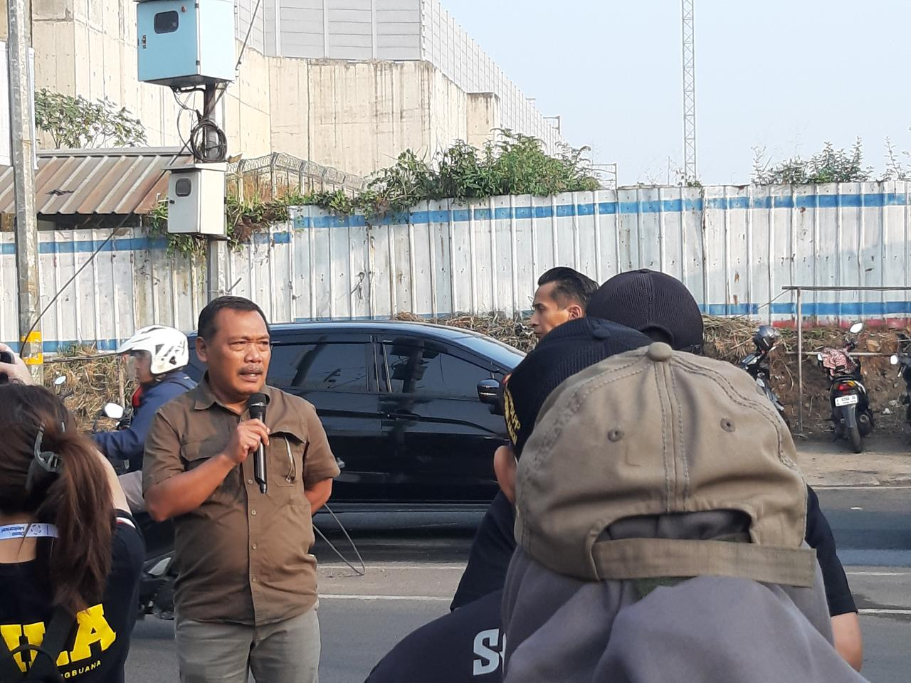
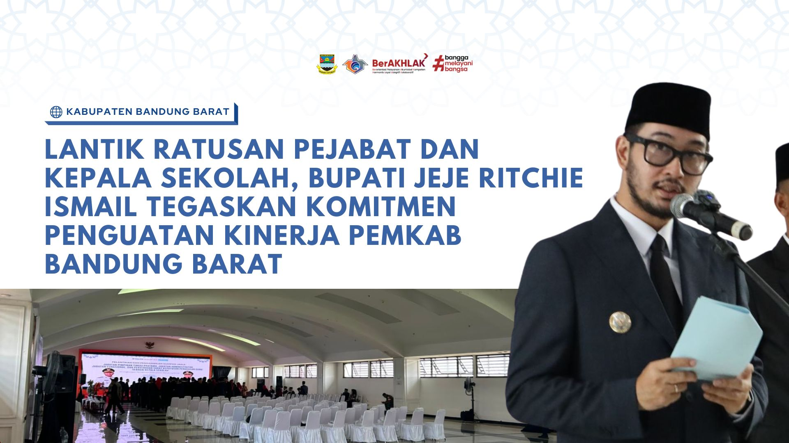
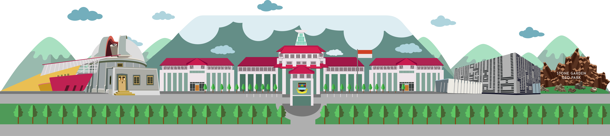

PADALARANG, Bandung Barat — Menindaklanjuti perintah langsung Bupati Bandung Barat, Jeje Ritchie Ismail, Satuan Polisi Pamong Praja (Satpol PP) Kabupaten Bandung Barat (KBB) menggelar aksi pembersihan dan penertiban.

NGAMPRAH — Bupati Bandung Barat melantik ratusan pejabat struktural dan kepala sekolah dalam rangka meningkatkan kinerja birokrasi dan mutu pendidikan di wilayah Kabupaten Bandung Barat.

Dinas Kependudukan dan Pencatatan Sipil terus melakukan optimalisasi layanan jemput bola dan layanan cepat di Mal Pelayanan Publik untuk mempermudah masyarakat mengurus administrasi kependudukan.